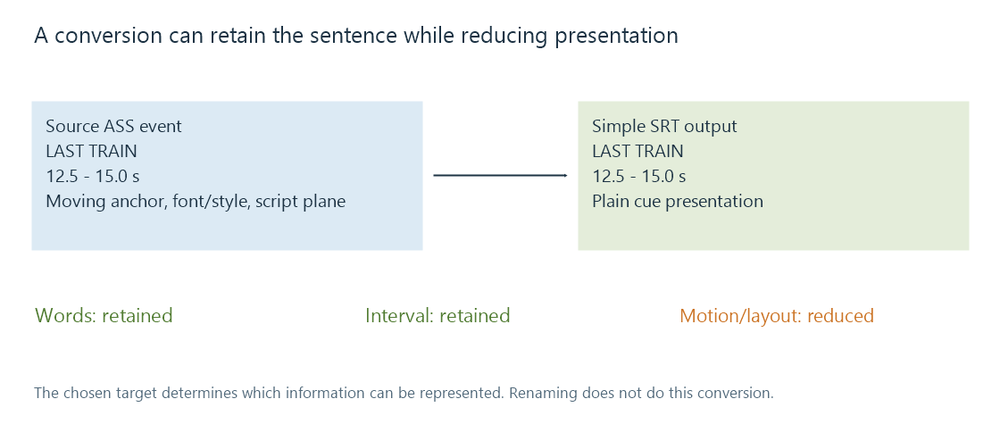

Subtitle format conversion
Subtitle format conversion translates timing, content and presentation from one subtitle model into another with explicit choices about what the target can represent.
Subtitle conversion interprets one format's model and writes another. A good conversion identifies the required content, timing and presentation, then determines which of those the target can represent.
Changing an extension does not perform that interpretation. Nor does preserving the sentence establish that its full visual behavior survived.
| Conversion | Work and possible information change |
|---|---|
| Simple text to another simple text format | Re-express cue syntax and timing; preserve supported markup |
| Styled text to plain text | Retain words/intervals while reducing presentation instructions |
| Text to bitmap | Shape and render with selected fonts and geometry |
| Bitmap to another bitmap representation | Repackage/recode graphics, palette, placement and updates |
| Bitmap to character text | Recognize/transcribe words, then author the target timing and layout |
A moving sign and a plain-text cue
Imagine an ASS event from 12.5 to 15 seconds with this override, using a previously declared style and script plane:
{\an7\move(160,90,480,90,0,1000)}LAST TRAIN
The anchor moves during the event's first second. A simple SRT output can retain:
1
00:00:12,500 --> 00:00:15,000
LAST TRAIN
The words and interval match. The target does not contain an equivalent moving anchor, script plane or complete style. It normally presents the words using its own supported caption layout.

This can be an appropriate result when readable dialogue is the goal. It is a different result when the intended translation must remain attached to a moving sign.
Precision and origin can change the time description
A target with millisecond times and a source with centisecond times use different representations. Converting to finer timestamp precision does not recover timing detail that the source never supplied.
Moving from a container or segmented stream into a standalone file also requires resolving the original time base and origin. A cue local to one segment must be placed on the final programme timeline rather than copied to movie time zero.
Compare resolved times before examining tiny text-format rounding differences. A several-second shift usually has another cause.
Internal timing is not just the event boundary
A styled event can have motion, fades or karaoke durations inside its active interval. If a rate correction changes a programme's time scale, those internal instructions may need the same transformation.
Extending an event's end while leaving a one-second movement unchanged creates a longer event containing the original-speed movement. That differs from slowing the whole presentation proportionally.
A target unable to express internal timing needs another preservation choice, such as simpler static text or rendered images. It should not claim to preserve an animation merely because its first and last cue times were copied.
The target renderer needs its resources
Retaining a font-family name does not bundle the font face. Retaining a graphics object's palette indices does not recreate an omitted palette. Resource handling and track conversion need to agree on what reaches the consumer.
For an Emby route converting subtitles for a selected app, assess the delivered track's wording, resolved intervals and intended appearance separately. A conversion preserving a readable sentence can be useful while still producing a different typeset result.
See Also
- Subtitle extraction
- Subtitle OCR
- Advanced SubStation Alpha subtitles (ASS)
- Karaoke subtitle timing
- Subtitle timestamps